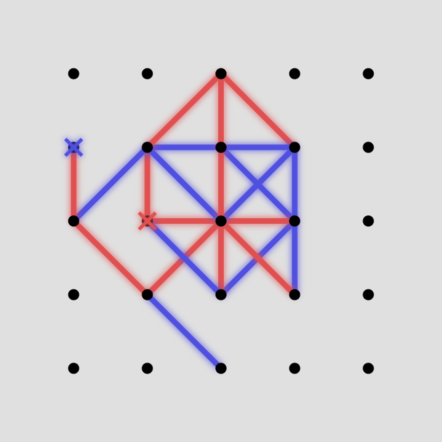
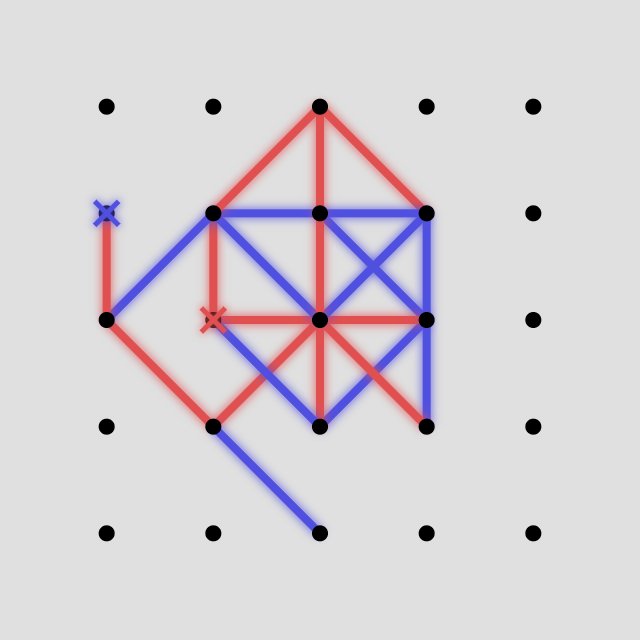
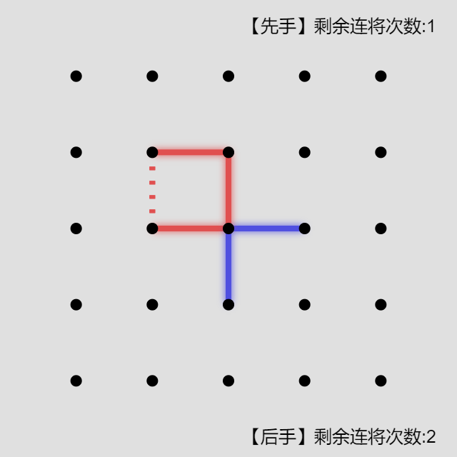
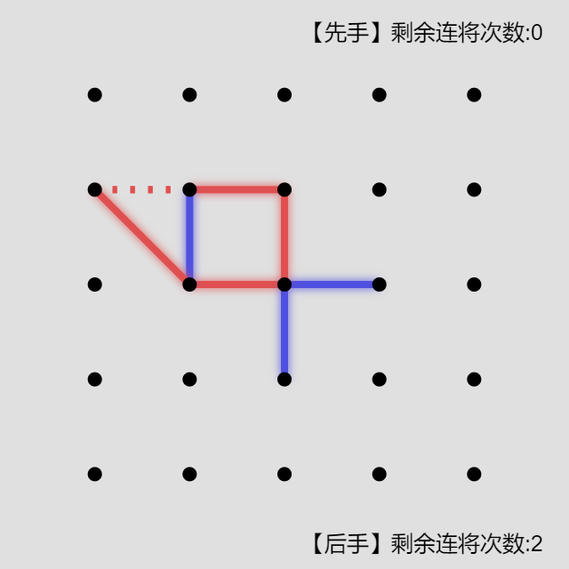
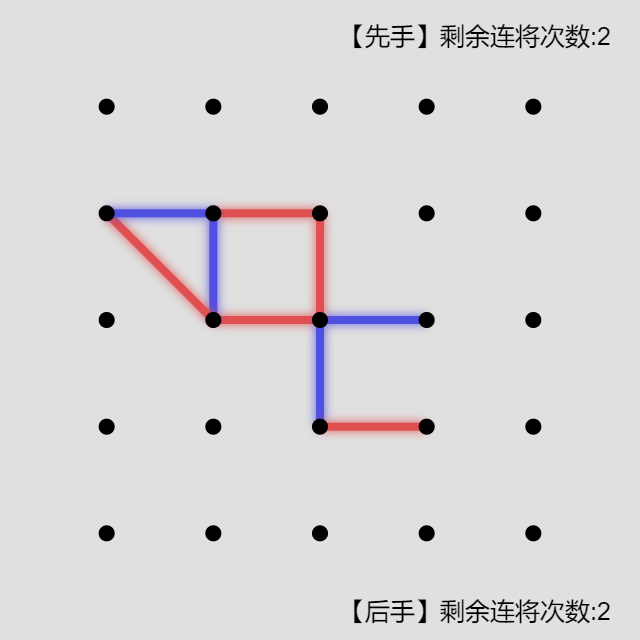
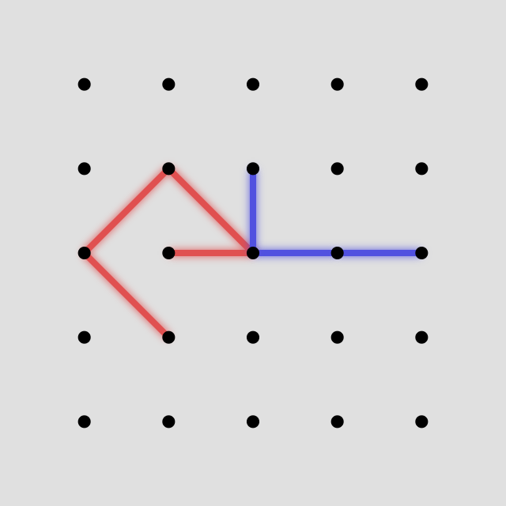
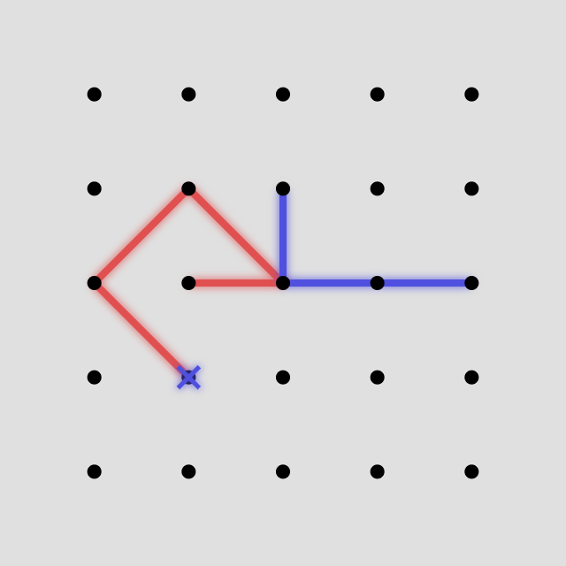
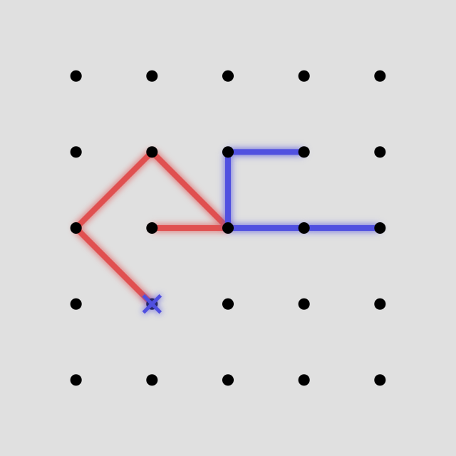

WGZ棋规则（WGZ2019）
WGZ棋的棋盘是5*5的点阵，其棋子是不同颜色线段。先手为红，后手为蓝。双方轮流在棋盘上添加自己颜色的线段。

 

合规线段要求如下：
- 由一个点连到上、下、左、右、左上、右上、左下、右下最近的点（如果存在）
- 不能与已有线段重合
- 端点没有被叉（详见后文）
胜利的目标是围成一个合规图形
合规图形要求如下:
- 端点为点阵中点
- 为不自交的封闭图形
- 不是三角形
- 没有被禁用（详见后文）

再添加一条己方合规线段就能构成合规图形的状态为“将军”，不能连将超过2次。（取胜不算将军）
  每局双方各有一次“叉点”机会，可以在某回合添加线段前叉掉一个点。（叉掉的点在之后双方不能连线段，但不影响已有线段。合规图形也可以包含被叉的点）
  
为了平衡先手优势，后手可以禁用先手一个图形。与之全等的图形都为禁用。
当能取胜时，要下取胜的线段。
如果有一方无棋可下，则双方都是赢家。